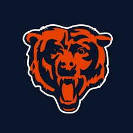

The Chicago Bears franchise was founded in 1920 as the Decatur Staleys by the A.E. Staley Company, later moving to Chicago in 1921 and becoming the Chicago Bears. The team was one of the charter members of the American Professional Football Association in 1920, which was renamed the National Football League in 1922. Their rival is the Arizona Cardinals
Walter Jerry Payton was an American professional football running back who played in the National Football League for 13 seasons with the Chicago Bears. Nicknamed "Sweetness", he is widely regarded as one of the greatest football players of all time.
Michael Singletary, nicknamed "Samurai Mike", is an American former professional football player and coach. He played as a linebacker for the Chicago Bears of the National Football League
Devin Duvernay is an American professional football wide receiver and return specialist for the Chicago Bears of the National Football League. He played college football for the Texas Longhorns and was selected by the Baltimore Ravens in the third round of the 2020 NFL draft.
Cole Kmet is an American professional football tight end for the Chicago Bears of the National Football League. He played college football for the Notre Dame Fighting Irish, and was selected by the Bears in the second round of the 2020 NFL draft
Daniel Oliver Hampton is an American former professional football player who was a defensive tackle for twelve seasons with the Chicago Bears from 1979 to 1990 in the National Football League. He was elected to the Pro Football Hall of Fame in 2002. He currently hosts the Bears postgame show on WGN Radio in Chicago.
Sidney Luckman was an American professional football quarterback who played for the Chicago Bears of the National Football League from 1939 through 1950. During his 12 seasons with the Bears, he led them to four NFL championships in 1940, 1941, 1943, and 1946.